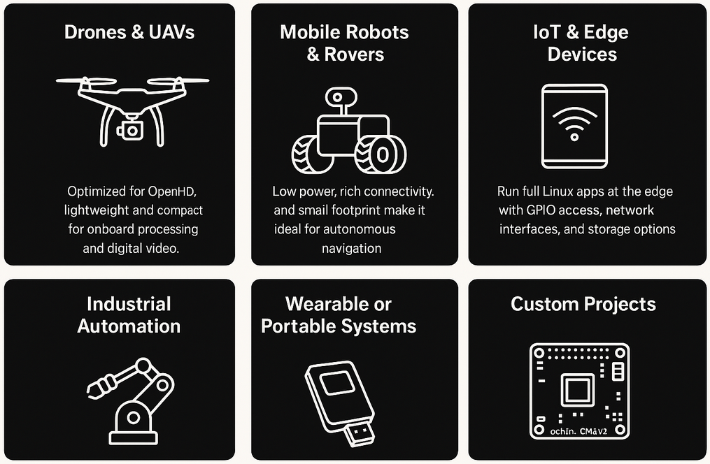

ochin_CM4v2 isn’t a demo board — it’s built to fly, roll, and compute in demanding environments.
From air to ground, it powers real missions.
Whether you’re flying, driving, monitoring, or prototyping — ochin_CM4v2 is ready for the real world.

We are OpenHD OpenHD is a suite of software designed for long-range video transmission, telemetry, and RC control. While we originally designed it with hobbyist drones in mind, it can be adapted to a wide range of other applications as well. We are an open-source project that has been collaboratively developed by a dedicated group of passionate developers who generously contribute their time and expertise. It also benefits from a large and supportive community of contributors.
At WARR Rocketry we develop, construct and launch advanced sounding rockets. From the engine and structure to the aerodynamic elements and the flight computer, we design the vast majority of the components ourselves. Leveraging years of expertise, we succeed at producing and testing our rockets with precision and innovation. Explore the heights with us as we redefine the frontiers of rocketry.